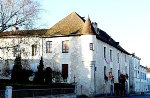
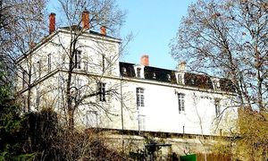
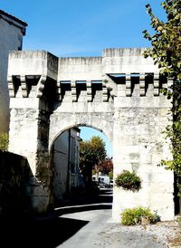
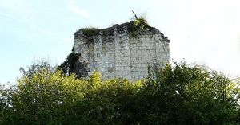
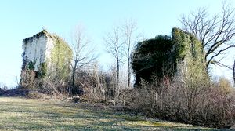

Recensement Jean-Claude Truffet
| Département | 24 — Dordogne |
| Canton | Montagrier |
| Commune | Tocane Saint-Apre |
| Type d'édifice | Château |
| Période d'origine | XV-XVII |
| Coordonnées GPS | 45° 15' 19" Nord, 0° 29' 50" Est Beauséjour grav 4-5 GPS : 45° 15' 14" Nord, 0° 28' 30" Est |





A Tocane st-Apre le château de Beauséjour du XVe ou XVIe siècle et à deux Km au nord Montagrier (Fayolle Voir Article)
BEAUSEJOUR :La première mention écrite connue du lieu remonte au début du XIIIe siècle sous la forme Sen-Leo, est bâti en 1340 par le cardinal Hélie de Talleyrand, comme élément défensif avancé du château de Grignols. Lors de la Fronde, en 1652, les troupes du Grand Condé incendient et détruisent le château. Aux XVIIe et XVIIIe siècles, la paroisse de Saint-Léon dépend de la châtellenie de Grignols. En remplacement d'un bac qui assurait la traversée de l'Isle entre Beauséjour et le village, le pont de Saint-Léon-sur-l'Isle est construit en 1880 puis élargi en 1971. Louise de Lacropte-Chantérac, mère de Fénelon, y est née. Château de LAVALADE, est mentionné dès 1323 Géraud de Cassaignol y rend hommage devant le comte de Périgord édifié au XVIe siècle
Ruines du château de VERMODE dont le donjon est classé M.H. depuis 1886.
Hôtel PARADOL, du XVe siècle : la famille Paradol est anoblie en 1442 par Charles VII. C'est vers la fin du XVe siècle que fut construit l'hôtel éponyme. La famille y résidera jusqu'à la Révolution. Un inventaire de 1794 donne une vision précise des aménagements intérieurs. Les communs comprenaient une grange avec un pressoir et ses cuves ainsi qu'une écurie. Successivement couvent puis école de soeurs avant la dernière guerre, l'hôtel est acheté puis restauré par la commune. Il abrite une bibliothèque, le syndicat d'initiative, un musée du costume.
BEAUSEJOUR, construit du XVe au XVIe siècle. sa chapelle, aujourd'hui en ruines, fut érigée en 1607. Au début du XXe siècle, des bâtiments agricoles ont remplacé les communs. Construite à la charnière des XVe et XVIe siècles, la maison forte de Beauséjour fut remaniée par la suite. A lorigine, elle possédait une enceinte rectangulaire comprenant des tours carrées, qui était doublée de douves. Une chapelle lui fut adjointe au XVIIe siècle. LAVALADE, du XVIe et XVIIIe siècle le logis actuel a été remanié au XVIIIe siècle, époque à laquelle on construit le pavillon nord et reprend l'ensemble des ouvertures de l'édifice. Au XVIIe siècle, le domaine qui comprenait la métairie des Maureloux et le Moulin de la Rue, appartient à la famille de Noalis, puis, au siècle suivant, il est vendu aux Révolte, peut-être à l'origine des transformations du XVIIIe siècle. VERMODE, ruiné du XIIe siècle. C'est un édifice fortifié. Il ne reste que le donjon de Vernode encore debout. Il reste la Tour à base carrée, couverte en coupole sur pendentif. L'accès semble être possible par une hunette, au sommet de la coupole. Elle devait servir de silo ou de basse fosse. Le Donjon de Vernode est inscrit aux M.H. le 12/07/1886 et appartient à la commune. Le fief a, entre autre, été la possession des Vernodes et des Fayolles.
MONTAGRIER, au XIIe et XIVe siècle, Montagrier possédait des murailles dont il reste aujourd'hui une imposante porte la Porte de Wiridel. Château de GOUYAS, pas d'information historique du XIXe siècle de plan en équerre à deux niveaux et série de lucarnes sur toit à la mansard.
Famille Paradol Famille Guillaume Rouchaud
"
A Tocane Saint-Apre. Grav 1 à 3. Lavalade-Vernode GPS : 45° 15' 19" Nord, 0° 29' 50" Est Beauséjour grav 4-5 GPS : 45° 15' 14" Nord, 0° 28' 30" Est